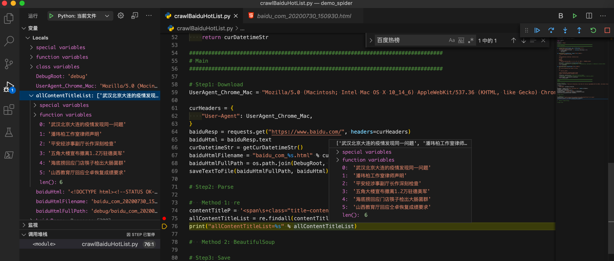

用纯内置库裸写
此处使用纯Python的库，主要是：
- 下载=HTTP网络库下载HTML源码
- urllib
- 解析=解析提取所需内容
- 正则
- re
- 正则
核心代码：
用内置网络库：urllib：
import urllib.request
baiduUrl = "https://www.baidu.com/"
# Method 1 (pure python built-in lib, no third-party lib): urllib
baiduResp = urllib.request.urlopen(baiduUrl)
baiduHtmlBytes = baiduResp.read()
baiduHtml = baiduHtmlBytes.decode()
即可获取到HTML源码：

或许用内置库：正则re：
# Step2: Parse
# Method 1: re
contentTitleP = '<span\s+class="title-content-title">(?P<contentTitle>[^<>]+)</span>'
allContentTitleList = re.findall(contentTitleP, baiduHtml)
print("allContentTitleList=%s" % allContentTitleList)
即可匹配出要的热榜标题列表：

完整代码
# Function: Demo how use Python crawl baidu.com 百度热榜
# Author: Crifan
# Update: 20200731
import os
import codecs
from datetime import datetime,timedelta
import urllib.request
import re
# import requests
# from bs4 import BeautifulSoup
import csv
DebugRoot = "debug"
OutputRoot = "output"
################################################################################
# Utils Functions
################################################################################
def createFolder(folderFullPath):
"""
create folder, even if already existed
Note: for Python 3.2+
"""
os.makedirs(folderFullPath, exist_ok=True)
def saveTextToFile(fullFilename, text, fileEncoding="utf-8"):
"""save text content into file"""
with codecs.open(fullFilename, 'w', encoding=fileEncoding) as fp:
fp.write(text)
fp.close()
def datetimeToStr(inputDatetime, format="%Y%m%d_%H%M%S"):
"""Convert datetime to string
Args:
inputDatetime (datetime): datetime value
Returns:
str
Raises:
Examples:
datetime.datetime(2020, 4, 21, 15, 44, 13, 2000) -> '20200421_154413'
"""
datetimeStr = inputDatetime.strftime(format=format)
# print("inputDatetime=%s -> datetimeStr=%s" % (inputDatetime, datetimeStr)) # 2020-04-21 15:08:59.787623
return datetimeStr
def getCurDatetimeStr(outputFormat="%Y%m%d_%H%M%S"):
"""
get current datetime then format to string
eg:
20171111_220722
:param outputFormat: datetime output format
:return: current datetime formatted string
"""
curDatetime = datetime.now() # 2017-11-11 22:07:22.705101
# curDatetimeStr = curDatetime.strftime(format=outputFormat) #'20171111_220722'
curDatetimeStr = datetimeToStr(curDatetime)
return curDatetimeStr
def saveToCsvByDictList(csvDictList, outputFilePath):
# generate csv headers from dict list
firstItemDict = csvDictList[0]
csvHeaders = list(firstItemDict.keys())
with codecs.open(outputFilePath, "w", "UTF-8") as outCsvFp:
csvDictWriter = csv.DictWriter(outCsvFp, fieldnames=csvHeaders)
# write header by inner function from fieldnames
csvDictWriter.writeheader()
for eachRowDict in csvDictList:
csvDictWriter.writerow(eachRowDict)
def saveToCsvByHeaderAndList(csvHeaderList, csvRowListList, outputFilePath):
with codecs.open(outputFilePath, "w", "UTF-8") as outCsvFp:
csvWriter = csv.writer(outCsvFp)
# write header from list
csvWriter.writerow(csvHeaderList)
# type1: write each row
# for eachRowList in csvRowListList:
# csvWriter.writerow(eachRowList)
# type2: write all rows
csvWriter.writerows(csvRowListList)
################################################################################
# Main
################################################################################
createFolder(DebugRoot)
createFolder(OutputRoot)
curDatetimeStr = getCurDatetimeStr()
# Step1: Download
UserAgent_Chrome_Mac = "Mozilla/5.0 (Macintosh; Intel Mac OS X 10_14_6) AppleWebKit/537.36 (KHTML, like Gecko) Chrome/84.0.4147.89 Safari/537.36"
curHeaders = {
"User-Agent": UserAgent_Chrome_Mac,
}
baiduUrl = "https://www.baidu.com/"
# Method 1 (pure python built-in lib, no third-party lib): urllib
baiduResp = urllib.request.urlopen(baiduUrl)
baiduHtmlBytes = baiduResp.read()
baiduHtml = baiduHtmlBytes.decode()
# # Method 2 (use third-party lib): requests
# baiduResp = requests.get(baiduUrl, headers=curHeaders)
# baiduHtml = baiduResp.text
# for debug
baiduHtmlFilename = "baidu_com_%s.html" % curDatetimeStr
baiduHtmlFullPath = os.path.join(DebugRoot, baiduHtmlFilename)
saveTextToFile(baiduHtmlFullPath, baiduHtml)
# Step2: Parse=Extract
# Method 1 (pure python built-in lib, no third-party lib): re
contentTitleP = '<span\s+class="title-content-title">(?P<contentTitle>[^<>]+)</span>'
allContentTitleList = re.findall(contentTitleP, baiduHtml)
# # Method 2 (use third-party lib): BeautifulSoup
# soup = BeautifulSoup(baiduHtml, 'html.parser')
# allTitleSoupList = soup.find_all("span", attrs={"class":"title-content-title"})
# print("allTitleSoupList=%s" % allTitleSoupList)
# allContentTitleList = []
# for eachTitleSoup in allTitleSoupList:
# titleStr = eachTitleSoup.string
# allContentTitleList.append(titleStr)
print("allContentTitleList=%s" % allContentTitleList)
# Step3: Save
# save to csv
OutputCsvHeader = ["序号", "百度热榜标题"]
OutputCsvFilename = "BaiduHotTitleList_%s.csv" % curDatetimeStr
OutputCsvFullPath = os.path.join(OutputRoot, OutputCsvFilename)
outputCsvDictList = []
for curIdx, eachTitle in enumerate(allContentTitleList):
curNum = curIdx + 1
csvDict = {
"序号": curNum,
"百度热榜标题": eachTitle
}
outputCsvDictList.append(csvDict)
saveToCsvByDictList(outputCsvDictList, OutputCsvFullPath)
print("Completed save data to %s" % OutputCsvFullPath)